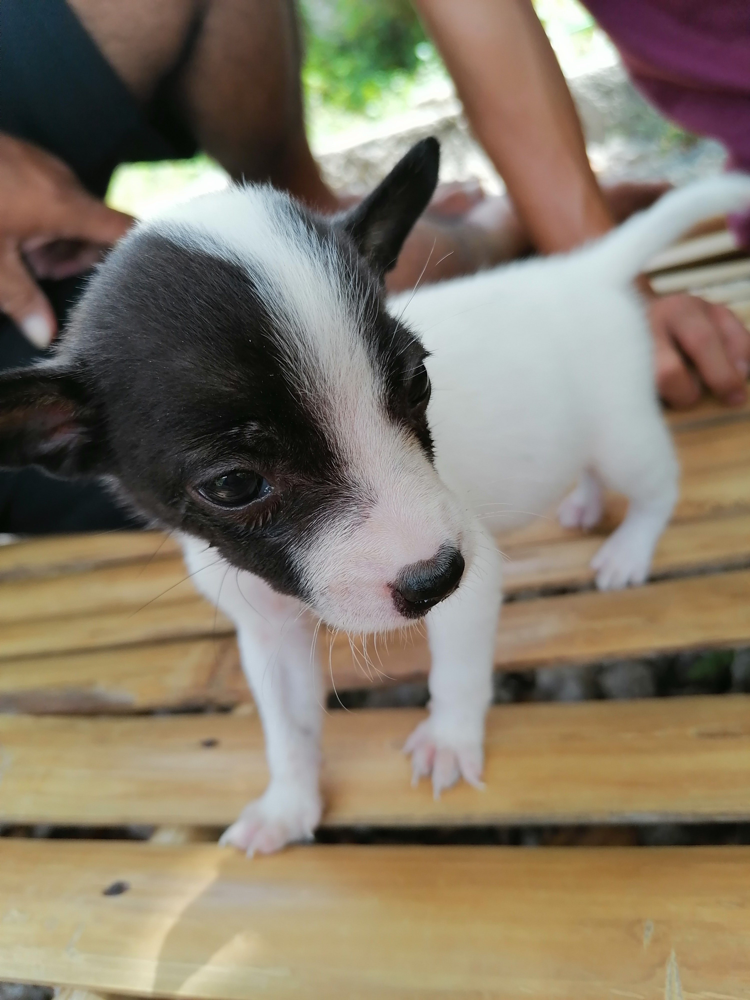
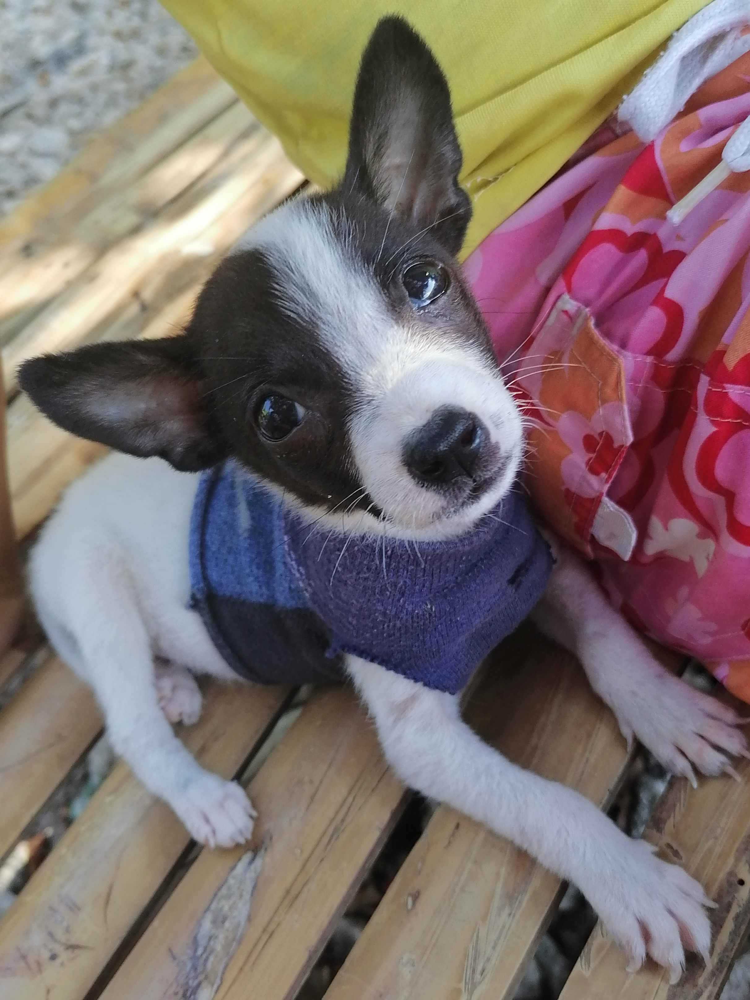
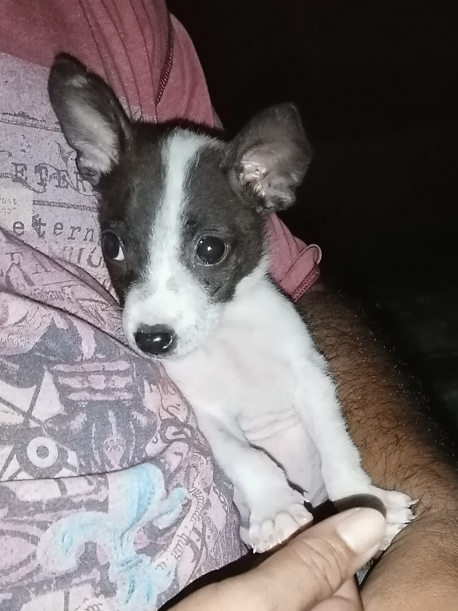
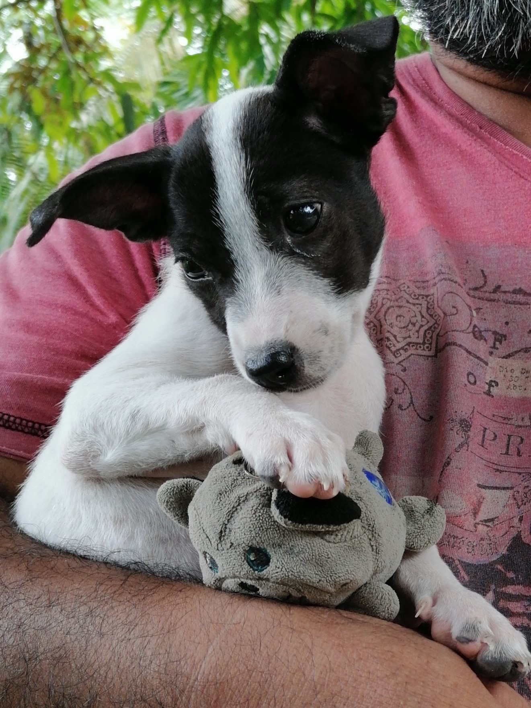

March 2020. We were on quarantine. No classes, no work, feels lonely. That’s why we came up with a solution, having a pet.
Everyone, meet Billy.



Billy as a puppy
Billy is the first canine species in the family. He was given to us by a neighbor because they said they had too many puppies. We chose Billy because he was the smallest. He was so small back then and was more like a giant rat than a tiny dog. He is so playful. But at the same time, he is so quiet. At first, we even think he couldn’t bark but he did eventually.
Playful Billy


Billy always loves to play. And when he plays, he runs up the stairs, runs back down, and all over the house. We give him toys with which he always had fun destroying. I taught him how to fetch a branch. I throw a branch away, he runs towards the branch, grabs it with his mouth and comes back to me. Cool, right? And fun too.
Billy and Rusty
Billy was our only dog for a while. I didn’t think he was alone. But then I got surprised when my mother got home with a puppy. She got him from her coworker. We gave him a name. He had so many names because we couldn’t come up with something. We went from “Spart”, to “Buddy” until mother came up with “Rusty” that was his final name. Billy and Rusty get along very well, sometimes. While Billy was playful, Rusty was kind of mature. Rusty thinks playing is fighting. But sometimes they sleep together.
Billy with the family
A year later, Billy and Rusty grew up. And we’re still on quarantine. I hope this would end next year. The dogs are happy with us. And we’re happy with them. If we didn’t had Billy and Rusty, I think quarantine could have felt worse.